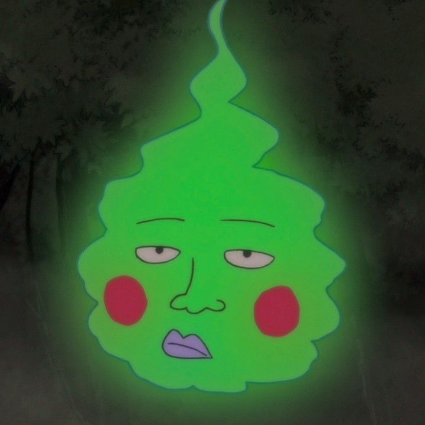

é um espírito de alto nível que, após ser derrotado por Mob, torna-se seu "companheiro" sarcástico e manipulador, mantendo o plano ambicioso de um dia se tornar um deus, mas acabando por desenvolver uma lealdade genuína aos irmãos Kageyama.

Para mais informações, acesse esse link da wiki.
>VoltarSite desenvolvido pelo aluno Bryan Gabriel do IFTM-Campus Patrocínio.